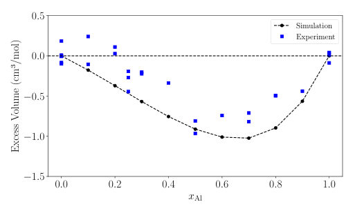
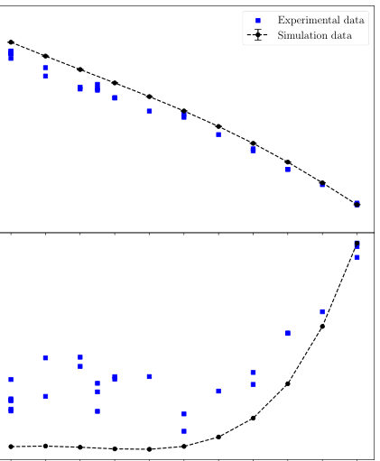

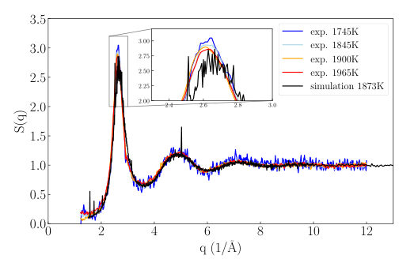
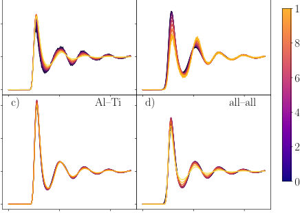
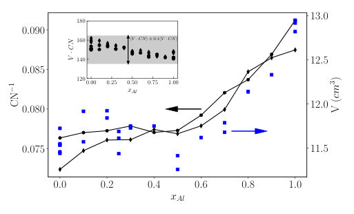
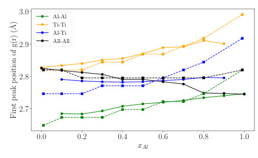
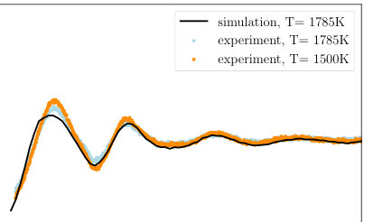
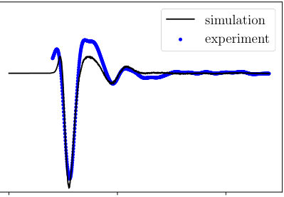
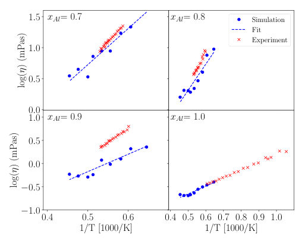
158 papers · 32 relevant · 2 highlighted
Every paper with at least one nonzero topic score, sorted by best-matching score. 🔥 marks scores ≥4/5. Click the title to jump to the full entry below; click [arXiv] to open the paper page. (secondary) marks papers from de-prioritized cond-mat archives.
Tavis-Cummings & cavity-many-emitter 5/5 · 🔥 Dicke superradiance 4/5 · 🔥 QC/QI experiment 4/5 · 🔥 correlated cavity matter 4/5 · 🔥 quantum optics experiment 4/5 · analog quantum simulation 3/5 · correlated / nonlocal dissipation 3/5 · spintronics-quantum-optics interface 3/5 · exotic spin models in light-matter 2/5 · non-equilibrium dynamics 2/5 · superradiant laser 2/5 · driven-dissipative phase transition 1/5 · entanglement & information structure 1/5 · quantum measurements 1/5QC/QI experiment 5/5 · 🔥 Rydberg arrays 5/5 · 🔥 entanglement & information structure 4/5 · non-equilibrium dynamics 3/5 · quantum optics experiment 2/5interference shaping light 5/5 · 🔥 quantum optics experiment 5/5 · 🔥 QC/QI experiment 4/5 · entanglement & information structure 2/5 · quantum measurements 2/5QC/QI experiment 5/5 · analog quantum simulation 3/5 · non-equilibrium dynamics 3/5 · quantum optics experiment 3/5 · entanglement & information structure 2/5Dicke superradiance 4/5 · 🔥 correlated / nonlocal dissipation 4/5 · 🔥 interference shaping light 4/5 · free-space correlated emission 3/5 · superradiant laser 3/5 · methods for driven-dissipative 2/5 · non-equilibrium dynamics 2/5QC/QI experiment 4/5 · 🔥 entanglement & information structure 4/5 · 🔥 quantum optics experiment 4/5 · non-equilibrium dynamics 3/5 · correlated / nonlocal dissipation 2/5 · quantum measurements 2/5QC/QI experiment 4/5 · 🔥 Rydberg arrays 4/5 · interference shaping light 3/5 · methods for driven-dissipative 2/5 · quantum optics experiment 2/5Keldysh / 2PI / non-Gaussian methods 4/5 · 🔥 entanglement & information structure 4/5 · non-equilibrium dynamics 3/5 · non-equilibrium universality 2/5 · scars & prethermalization 2/5entanglement & information structure 4/5 · 🔥 non-equilibrium dynamics 4/5 · Keldysh / 2PI / non-Gaussian methods 2/5 · non-equilibrium universality 2/5 · scars & prethermalization 2/5correlated / nonlocal dissipation 4/5 · entanglement & information structure 3/5 · Keldysh / 2PI / non-Gaussian methods 2/5 · methods for driven-dissipative 2/5 · non-equilibrium dynamics 2/5QC/QI experiment 4/5 · 🔥 quantum optics experiment 4/5 · interference shaping light 2/5 · quantum measurements 2/5entanglement & information structure 4/5 · non-equilibrium dynamics 3/5 · non-equilibrium universality 2/5 · scars & prethermalization 2/5quantum optics experiment 4/5 · quantum measurements 3/5 · Tavis-Cummings & cavity-many-emitter 2/5 · correlated / nonlocal dissipation 2/5QC/QI experiment 4/5 · correlated / nonlocal dissipation 2/5 · non-equilibrium dynamics 2/5 · quantum measurements 2/5quantum measurements 4/5 · methods for driven-dissipative 3/5 · non-equilibrium dynamics 3/5QC/QI experiment 4/5 · 🔥 quantum optics experiment 4/5non-equilibrium dynamics 4/5 · analog quantum simulation 2/5 · non-equilibrium universality 2/5QC/QI experiment 4/5 · exotic spin models in light-matter 2/5 · quantum measurements 2/5entanglement & information structure 4/5 · Keldysh / 2PI / non-Gaussian methods 2/5 · non-equilibrium dynamics 2/5Keldysh / 2PI / non-Gaussian methods 4/5 · methods for driven-dissipative 2/5 · non-equilibrium dynamics 2/5(secondary) — 🔥 non-equilibrium dynamics 4/5 · spintronics-quantum-optics interface 3/5entanglement & information structure 4/5 · non-equilibrium dynamics 3/5entanglement & information structure 4/5 · quantum measurements 2/5QC/QI experiment 4/5 · non-equilibrium dynamics 2/5Kondo & dissipative impurity 4/5 · Keldysh / 2PI / non-Gaussian methods 2/5quantum measurements 4/5 · entanglement & information structure 2/5methods for driven-dissipative 4/5 · non-equilibrium dynamics 2/5QC/QI experiment 4/5 · entanglement & information structure 1/5entanglement & information structure 4/5QC/QI experiment 4/5QC/QI experiment 4/5QC/QI experiment 4/5Papers by authors on your watch list. Click the title to jump to the full entry below; click [arXiv] to open the paper page.
Papers from quant-ph and your primary cond-mat archives (quant-gas, stat-mech, str-el, dis-nn). Highlighted papers (⭐) come first, then everything else sorted by topic-relevance score, highest first.
Authors: Ao Nakagawa, Ryo Toyama, Keisuke Masuda, Weinan Zhou, Hirofumi Suto, Kodchakorn Simalaotao, Yoshio Miura, Yuya Sakuraba, Tetsunori Koda
Type: both · Category: other · PDF: https://arxiv.org/pdf/2604.26257v1
Analysis basis: full PDF text, analyzed in chunks
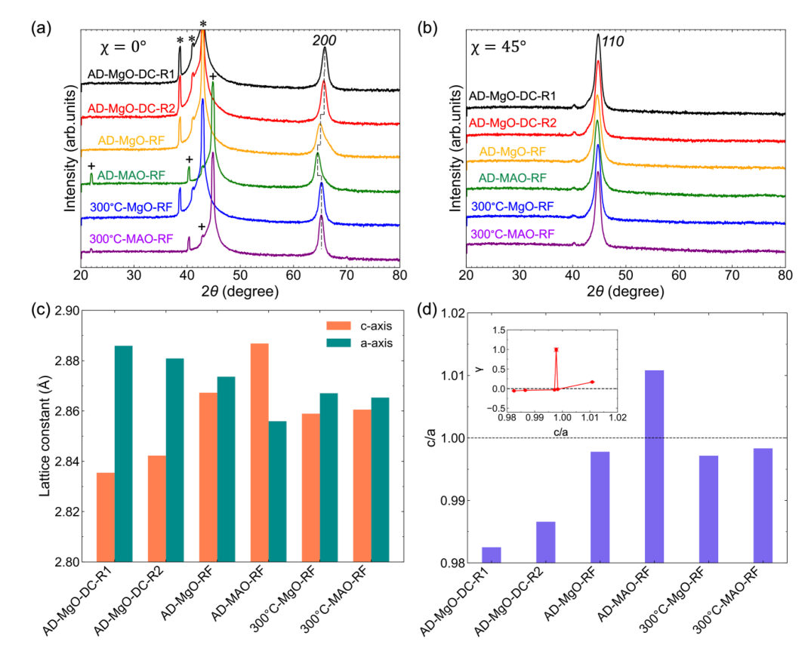
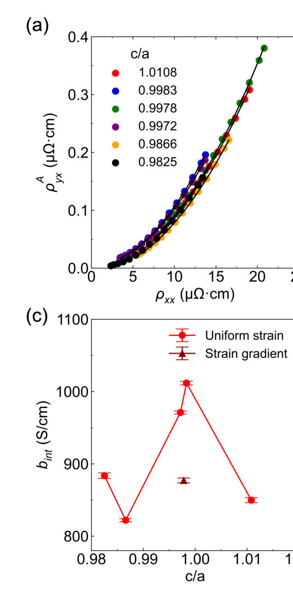
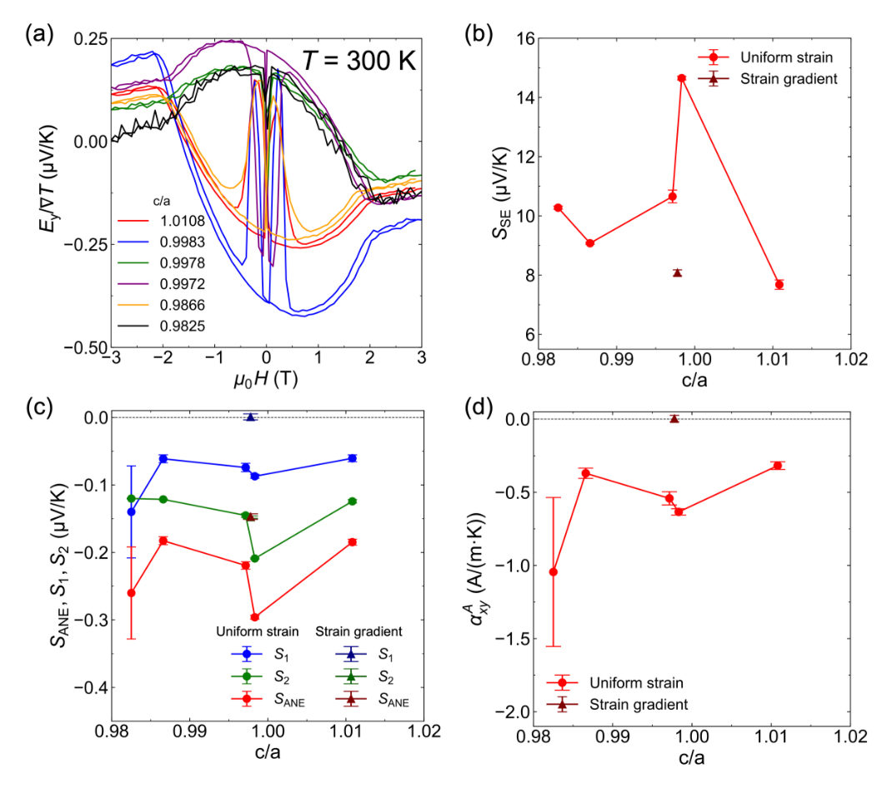
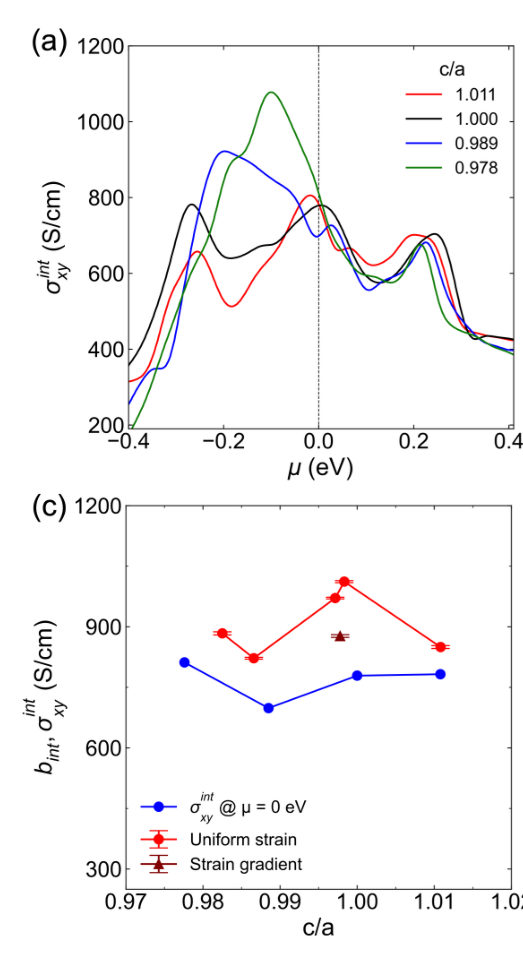
Main problem. The study aims to disentangle whether the strain-induced changes in the anomalous Hall effect (AHE) and anomalous Nernst effect (ANE) in Fe thin films are driven by intrinsic Berry curvature modulation or extrinsic scattering mechanisms.
Main result. The AHE is found to be predominantly governed by intrinsic mechanisms that follow theoretical predictions of Berry curvature modulation, whereas the ANE is strongly influenced by extrinsic contributions, leading to a significant deviation from theoretical predictions.
Method. The researchers used epitaxial Fe thin films on MgO and MAO substrates to vary lattice strain, performed scaling law analysis on magnetotransport data, and compared experimental results with first-principles DFT calculations.
Summary. This paper investigates how epitaxial strain affects the anomalous Hall and Nernst effects in iron thin films. By comparing films with different c/a ratios to theoretical Berry curvature calculations, the authors show that the Hall effect is primarily driven by intrinsic electronic structure changes. However, they find that the Nernst effect deviates significantly from theory due to strong extrinsic contributions. This distinction highlights the complexity of using strain to tune transverse transport in magnetic materials.
Model / system. The physical system consists of 20 nm thick (001)-oriented epitaxial Fe thin films grown on MgO (tensile strain) and MgAl2O4 (compressive strain) substrates, covering a range of c/a ratios from 0.9825 to 1.0108.
Key observables. Anomalous Hall conductivity (AHC), anomalous Nernst conductivity (ANC), longitudinal resistivity, Hall resistivity, Seebeck coefficient, and c/a ratio.
Important parameters / regimes. Lattice strain (tensile vs. compressive), tetragonal distortion (c/a ratio), temperature (15 K to 300 K), and magnetic field.
Assumptions / limitations. The study assumes that using a single-element ferromagnet like Fe minimizes complexities from multicomponent stoichiometry, though it notes that impurities from different sputtering systems can affect the skew scattering sign.
Figures summary. Figure 1 shows XRD profiles demonstrating epitaxial growth and strain-induced lattice constant shifts; Figure 2 presents scaling analysis for separating AHE components; Figure 3 shows Nernst electric field and coefficients as a function of c/a ratio; Figure 4 compares experimental c/a dependence with theoretical energy dependence.
Paper structure. The paper introduces the challenge of strain-induced effects, describes the experimental preparation of Fe films, presents structural characterization via XRD, details the magnetotransport and scaling analysis, compares results to DFT calculations, and concludes with a discussion on the differing physical origins of AHE and ANE.
The anomalous Hall effect (AHE) and anomalous Nernst effect (ANE) are the transverse transport phenomena in magnetic materials, which reflect the Berry curvature arising from the electronic structure near the Fermi level. Lattice strain provides a direct means to tune these effects by modifying the electronic structure; however, disentangling the strain-induced effect through the Berry curvature modulations in multicomponent materials is challenging due to complexities arising from extrinsic contributions by impurities and disorder, as well as difficulties in simple direct comparison with first-principles calculations. In this study, we focus on Fe, a prototypical single element ferromagnet with a well-established electronic structure, and tune the sign and magnitude of the strain in epitaxial thin films of by varying the substrates and deposition conditions to investigate the strain effect on the AHE and ANE. Scaling law analysis revealed that the intrinsic anomalous Hall conductivity (AHC) exhibits a clear tetragonal distortion (c/a) dependence, in good agreement with theoretical calculations based on Berry curvature modification. In contrast, the anomalous Nernst conductivity (ANC) shows a pronounced deviation from the theoretical values and markedly different c/a dependence. These results demonstrate a crucial difference in the physical origin between the AHC and the ANC in the Fe films; the AHC is predominantly governed by intrinsic mechanisms, whereas the ANC is strongly influenced by the extrinsic contribution.
Authors: Harsh Doshi, Shreerang Pande, Sathish K. Sukumaran, Apratim Chatterji
Type: theory · Category: statistical mechanics · PDF: https://arxiv.org/pdf/2604.26087v1
Analysis basis: full PDF text, analyzed in chunks
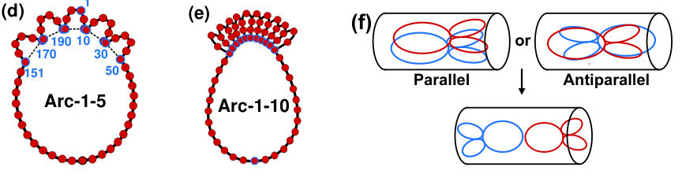
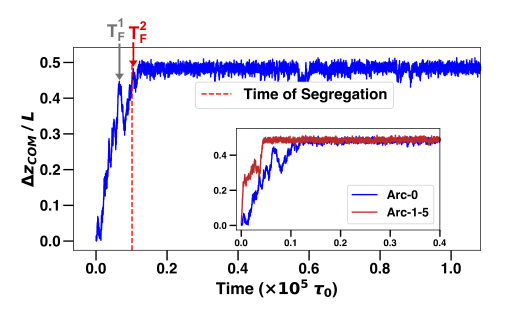
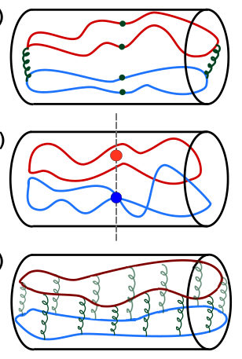
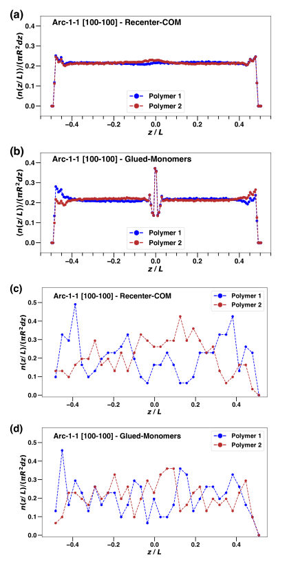
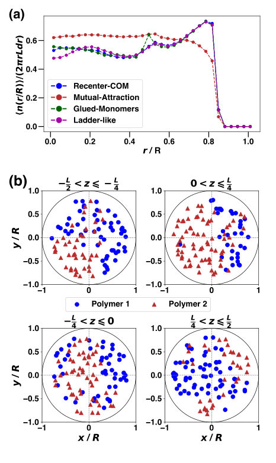
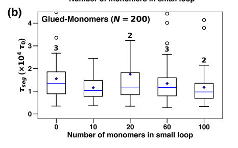
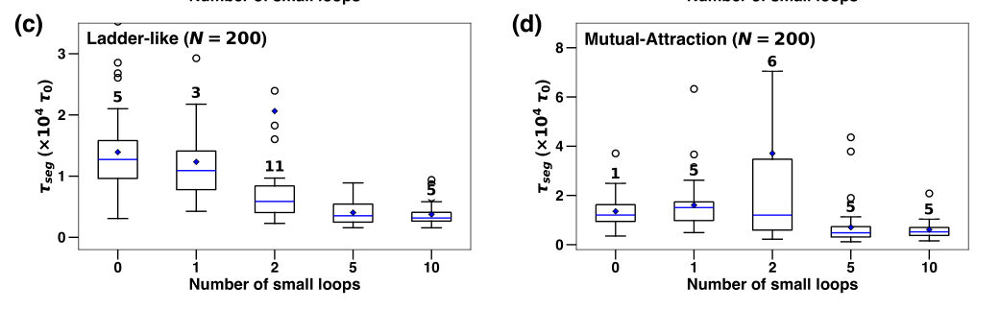
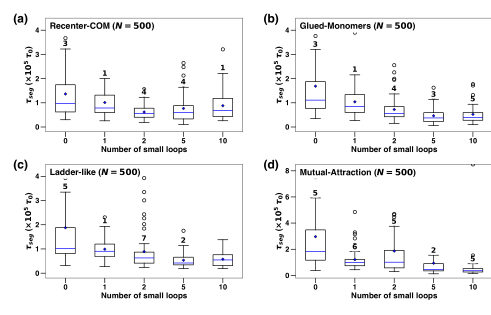
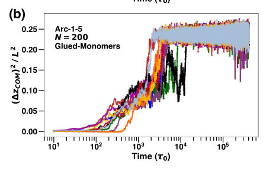
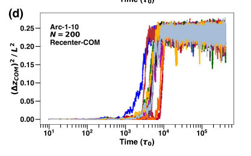
Main problem. Investigating how topological modifications, specifically the introduction of internal loops, affect the kinetics and rate of segregation of ring polymers under cylindrical confinement.
Main result. Increasing the number of small loops decreases the segregation time due to enhanced entropic repulsion, although antiparallel initial configurations and certain loop sizes can significantly delay segregation.
Method. Langevin dynamics molecular dynamics simulations using the LAMMPS software package with a Velocity Verlet integration scheme.
Summary. This study explores how the presence of loops in ring polymers affects how quickly they separate when confined in a cylinder. By simulating modified polymers, the authors show that adding more loops increases entropic repulsion, which actually speeds up the segregation process. The research also highlights how the initial orientation of the polymers can create kinetic barriers that slow down separation. These findings provide insight into how bacteria might use loop-extruding proteins to control the timing of chromosome segregation during cell division.
Model / system. Two unconcatenated, topologically modified (ToMo) ring polymers (Kremer-Grest bead-spring chains) confined within a cylindrical geometry, mimicking E. coli chromosome segregation.
Key observables. Time of segregation (tau_seg), normalized distance between centers of mass (delta z_COM/L), and monomer density distributions.
Important parameters / regimes. Number of loops, contour length of loops, degree of confinement (2Rg/D), and initial relative orientation (parallel vs. antiparallel).
Assumptions / limitations. The polymers are topologically constrained (no chain crossing), which does not account for the presence of topoisomerases in vivo.
Figures summary. Schematics of various topologies (Arc-0 to Arc-1-10), visualization of initialization protocols, time evolution of center of mass separation, and monomer density distributions.
Paper structure. The paper introduces the biological motivation, defines the polymer models and topological modifications, details the simulation methods and initialization protocols, presents results on the effect of loop number and size, analyzes the impact of initial orientation, and discusses biological implications and limitations.
In Escherichia coli (E. coli), entropic repulsion between the two daughter DNA ring polymers under cylindrical confinement is believed to be an important factor governing chromosomal segregation. The repulsion can be enhanced by topological modifications, i.e., by the introduction of internal loops at certain locations along the contour of the circular DNA. However, the effect of topological modifications on the rate of segregation of ring polymers remains unclear. Therefore, we systematically varied the number and the contour length of loops introduced at selected locations by crosslinking monomers. The appropriate crosslinking was motivated by observations that extruded loops are located mainly near the origin of replication (ori-proximal) region of the E. coli chromosome. This resulted in the chains becoming intrinsically anisotropic. Using Langevin dynamics simulations of these topologically modified bead-spring polymers, we calculated the time required for segregation under cylinder confinement. With certain caveats, we found that increasing the number of loops resulted in a decrease in the time of segregation. In line with past work, we propose that this is due to the increase in the entropic repulsion between the polymers upon increasing the number of loops. In addition to the number of loops, the contour length of the loops and the mutual orientation of the (anisotropic) chains in the initial configurations played a role in determining the time of segregation.
Authors: Caroline Kopecz-Muller, Joshua D Mcgraw, Thomas Salez
Type: theory · Category: other · PDF: https://arxiv.org/pdf/2604.26464v1
Analysis basis: full PDF text, analyzed in chunks
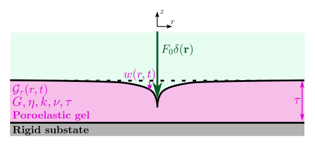
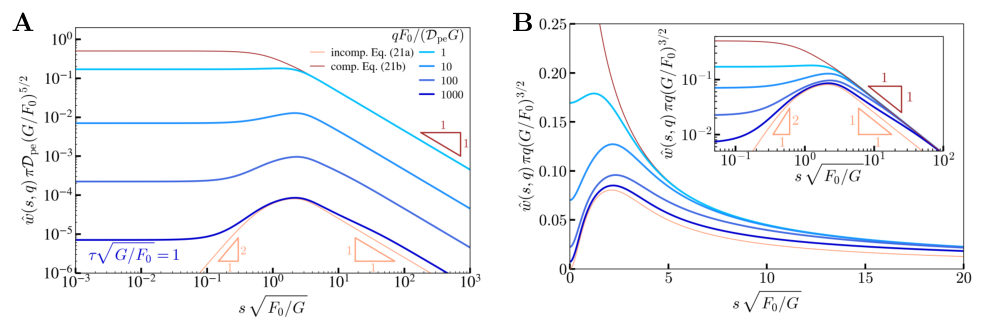
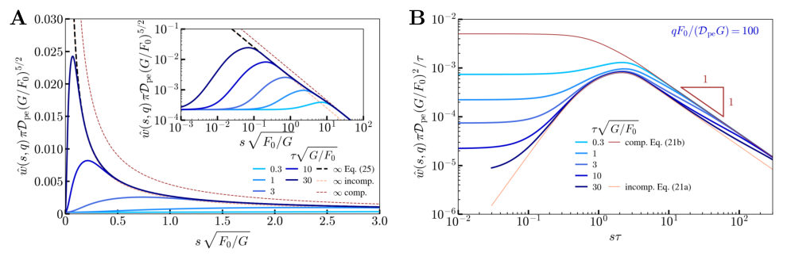
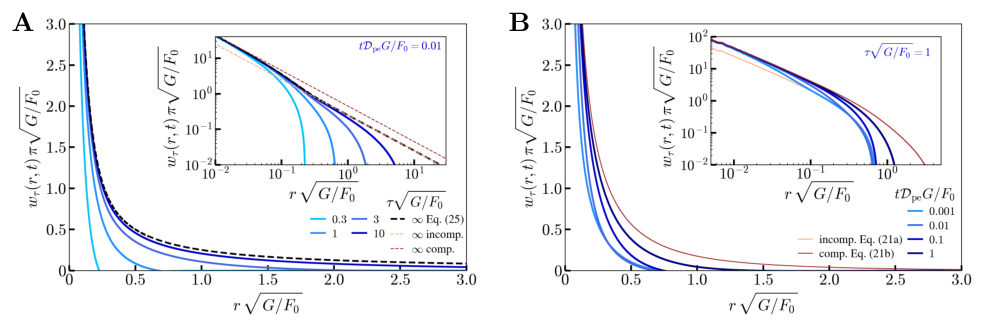
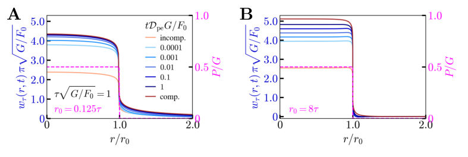
Main problem. Deriving the linear poroelastic Green's function to predict the space- and time-dependent mechanical response of a thin, permeable gel layer bounded to a rigid substrate.
Main result. The study provides an analytical expression for the poroelastic response, showing that deformation is localized to a radius comparable to the layer thickness and transitions from an incompressible to a compressible elastic state over time.
Method. The authors use an analytical approach involving Hankel and Laplace transforms in reciprocal space to solve the coupled poroelasticity equations and numerical inversion (Talbot algorithm) for real-space profiles.
Summary. This paper develops a mathematical framework to model how thin, porous gel coatings deform when a force is applied. It specifically addresses the challenge of finite thickness, showing that the mechanical response is confined to a region near the contact point. The researchers derived a Green's function that allows for the prediction of how these coatings relax from an incompressible to a compressible state. These findings are highly applicable to microfluidics, soft robotics, and biological membrane studies.
Model / system. A thin, hydrophilic, and permeable poroelastic gel layer of thickness tau, bounded at the bottom by a rigid, impermeable substrate and exposed to a solvent bath at the top.
Key observables. Surface normal deformation profile w(r, t) and the poroelastic Green's function G_tau(r, t).
Important parameters / regimes. Layer thickness (tau), shear modulus (G), permeability (k), Poisson ratio (nu), and solvent viscosity (eta).
Assumptions / limitations. Linear poroelasticity (small deformations), isotropic material, incompressible solvent, and a rigid/impermeable substrate.
Figures summary. Figure 1 shows a schematic of the system and applied force; Figure 2 displays deformation in reciprocal space across different temporal frequencies; Figure 3 shows scaled deformation vs. spatial frequency; Figure 4 shows real-space deformation profiles at different times/thicknesses; Figure 5 illustrates the relaxation of a gate-shaped pressure field.
Paper structure. The paper begins with a system definition and governing poroelastic equations, moves to a mathematical derivation using potential functions and transforms in reciprocal space, presents asymptotic analyses of various physical limits, and concludes with numerical results and applications to axisymmetric pressure fields.
When a hydrophilic and deformable porous material is immersed in a bath, it may absorb the solvent and expand by several times its volume, thus forming a highly soft and porous hydrogel. A stress applied on the soft hydrogel surface deforms it and forces the absorbed solvent to move by flowing through the network of pores. This coupled phenomenon sets the framework of poroelasticity. Moreover, polymeric gels are often used in ultra-thin coatings to tune surface properties. Together with the characteristic poroelastic coupling, this thinness challenges the modelling of their response. In this article, we derive the point-force mechanical response of a thin, permeable and poroelastic layer bounded to a rigid substrate. We show that the gel surface is only deformed around the indentation point, within a radius on the order of the layer thickness. The obtained Green's function can be directly used to predict the space- and time-dependent surface deformation of the gel. Our findings are relevant for a broad range of applications, such as indentation experiments on swollen gels, thin membranes or soft and living systems, as well as lubrication problems involving a soft and porous wall, for instance in microfluidics.
Authors: Gabriel de Miranda Nascimento, Marc L. Descoteaux, Laura Zichi, Chuin Wei Tan, William C. Witt, Nicola Molinari, Sriteja Mantha, Daniil Kitchaev, Mordechai Kornbluth, Karim Gadelrab, Charles Tuffile, Boris Kozinsky
Type: theory · Category: disordered systems and neural networks · PDF: https://arxiv.org/pdf/2604.26143v1
Analysis basis: full PDF text, analyzed in chunks
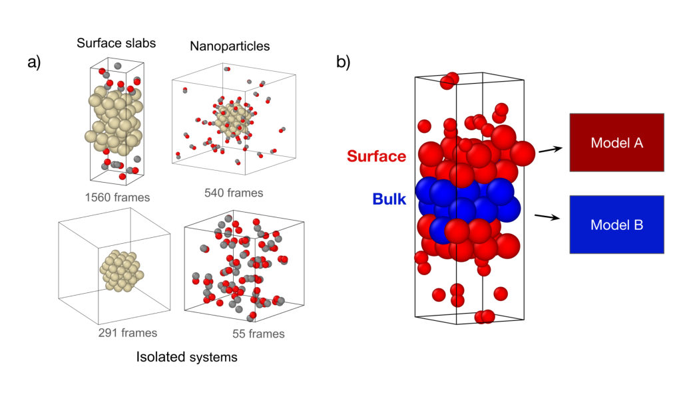
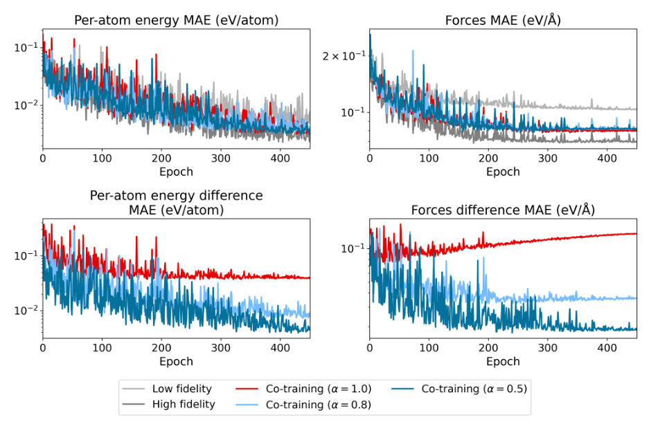
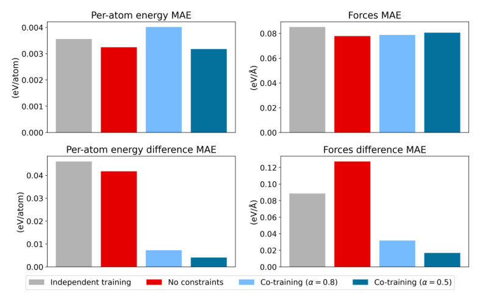
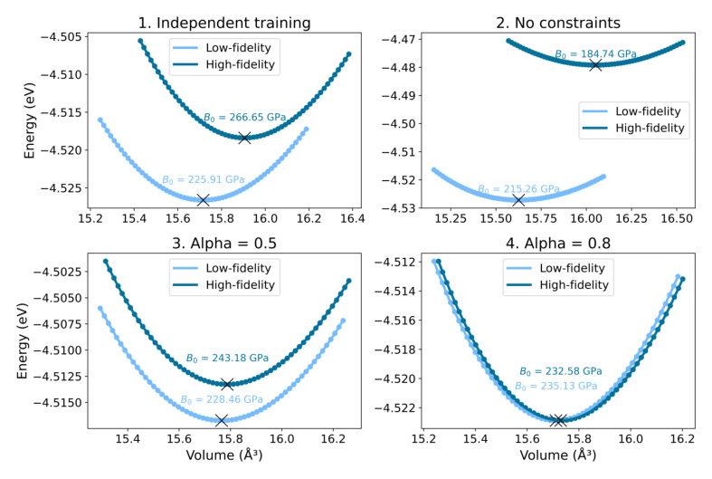
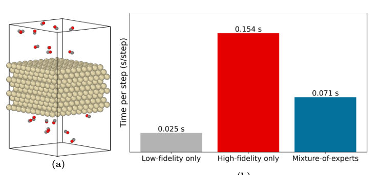
Main problem. The high computational cost of deep equivariant machine learning interatomic potentials (MLIPs) limits large-scale atomistic simulations, while multi-fidelity approaches often suffer from mechanical mismatch and artificial stresses at the interface of different models.
Main result. The authors developed a Mixture-of-Experts framework that achieves over 2x computational speedup compared to high-fidelity models while maintaining predictive accuracy and physical consistency (energy conservation and mechanical alignment) in a Pt+CO catalytic system.
Method. A multi-fidelity 'Mixture-of-Experts' framework using a co-training strategy with agreement constraints to penalize energy and force discrepancies between high-fidelity and low-fidelity models on shared bulk environments.
Summary. This paper introduces a way to speed up large-scale atomistic simulations by using different levels of machine learning model complexity for different parts of a system. By applying expensive, high-accuracy models only to chemically active regions (like surfaces) and cheaper, low-accuracy models to the bulk, the researchers achieved a 2x speedup. Crucially, they used a special training technique to ensure that the boundary between these two models does not create unphysical stresses or energy errors. This allows for much larger and longer simulations of complex materials like catalysts without losing the accuracy of high-end methods.
Model / system. An E(3)-equivariant Allegro architecture applied to a 1,040-atom Pt+CO catalytic system, where the domain is spatially partitioned into a high-fidelity region (reactive interface) and a low-fidelity region (bulk lattice).
Key observables. Per-atom energy, atomic forces, equation of state, bulk modulus, and energy conservation.
Important parameters / regimes. Alpha (weight of the agreement loss), number of layers and tensor features in the Allegro models, and the energy shift correction (E_ghost).
Assumptions / limitations. The domain decomposition is static (atom assignments are fixed at initialization) and the system can be partitioned into disjoint subsets.
Figures summary. Figure 1 shows training dataset diversity and the atom partitioning strategy; Figure 2 displays validation errors and model disagreement during training; Figure 3 shows performance on held-out test sets; Figure 4 illustrates the Pt+CO slab structure and compares wall-clock time efficiency.
Paper structure. The paper introduces the computational bottleneck of MLIPs, presents the Mixture-of-Experts framework and the co-training strategy, details the implementation on a Pt+CO system, validates accuracy and mechanical consistency, and concludes with efficiency benchmarks and future directions.
First-principles atomistic simulations are essential for understanding complex material phenomena but are fundamentally limited by their computational cost. While Machine Learning Interatomic Potentials (MLIPs) have drastically improved cost for a given accuracy, their inference cost remains a bottleneck for massive systems or long timescales. To address this, we introduce a multifidelity "Mixture-of-Experts" framework based on the E(3)-equivariant Allegro architecture. Our method spatially partitions the simulation domain into a chemically complex region (e.g., reactive interfaces) and a simple region (e.g., bulk lattice), assigning models of varying capacity to each. Among the challenges in such static domain decomposition, the mechanical mismatch between models at the interface is particularly critical, as it can generate artificial stress fields and instability. We address this challenge with a co-training strategy in which the loss function includes agreement constraints -- penalties on per-atom energy and force discrepancies between models evaluated on shared bulk environments -- forcing the independent models to learn a consistent physical description of the bulk material. We validate this approach on a realistic Pt+CO catalytic system, demonstrating that the co-trained models maintain exact energy conservation, align their bulk mechanical response (e.g., equation of state and bulk modulus), and achieve predictive accuracy comparable to a full high-fidelity simulation at more than twice the computational speed.
Authors: Yuna Kato, Jürgen Brillo, Dirk Holland-Moritz, Fan Yang, Thomas C. Hansen, Thomas Voigtmann, Linnea Heitmeier
Type: both · Category: disordered systems and neural networks · PDF: https://arxiv.org/pdf/2604.26362v1
Analysis basis: full PDF text, analyzed in chunks









Main problem. The study aims to validate the transferability of a machine-learning interatomic potential (NEP89) to liquid Al-Ti alloys and to characterize their structural and dynamical properties across various temperatures and compositions.
Main result. The ML potential accurately reproduces experimental density, structure factors, and viscosity, though it fails to capture the Darken approximation and Stokes-Einstein relation in Al-rich regimes due to decoupling of tracer dynamics.
Method. Molecular Dynamics (MD) simulations using the Neuro-Evolution Potential (NEP89) in the LAMMPS software, benchmarked against experimental neutron diffraction and electromagnetic levitation data.
Summary. This paper demonstrates that a machine-learning potential trained on solid-state data can accurately simulate the properties of liquid Al-Ti alloys. The researchers successfully modeled density, structure, and viscosity, providing new predictions for diffusion coefficients. However, they identified significant breakdowns in the Darken approximation and the Stokes-Einstein relation in Al-rich melts. This work highlights both the power of transferable ML potentials and the complexity of transport dynamics in multicomponent metallic liquids.
Model / system. A binary aluminum-titanium (Al-Ti) liquid metallic alloy system studied in the temperature range of 1550 K to 2200 K with aluminum mole fractions ranging from 0.0 to 1.0.
Key observables. Mass density, molar volume, excess volume, pair-correlation functions (PCF), static structure factor S(q), viscosity, self-diffusion coefficients, and inter-diffusion coefficients.
Important parameters / regimes. Temperature (1550-2200 K), Aluminum mole fraction (x_Al from 0.0 to 1.0), and the thermodynamic factor (Phi).
Assumptions / limitations. The machine-learning potential, originally trained on solid-state properties, is assumed to be transferable to the liquid state; the use of the soft-sphere model as a reference for local packing.
Figures summary. Figures show density and molar volume comparisons (Fig 1), excess volume trends (Fig 2), static structure factor for Ti (Fig 3), coordination numbers and molar volume (Fig 5), radial distribution function peak positions (Fig 6), structure factor Scc(q) (Fig 7), diffusion coefficients and interdiffusion components (Fig 11), temperature dependence of diffusion (Fig 12), and hydrodynamic radius vs atomic radii (Fig 13).
Paper structure. The paper introduces the ML potential and system, presents structural and thermodynamic validation against experiment, analyzes composition-dependent structural changes, investigates transport properties (viscosity and diffusion), and discusses the breakdown of standard transport models in specific concentration regimes.
We investigate the structural and dynamical properties of binary aluminum-titanium liquid metallic alloys, as a function of temperature and composition. We make use of MD-simulations, using a transferable machine-learning potential developed by Song et al. [Nature Communications 15, 10208 (2024)], and compare our results to experimental data. Although this potential was initially trained on solid properties, we find good agreement between the experimental data and the simulation results for the liquid state. The excess volume and compositional changes of the structure are captured well by the machine-learned potential. The simulation allows to disentangle local packing from chemical-ordering effects; the latter are found to be weak in Al-Ti. Dynamical quantities like the viscosity and the diffusion coefficients are also discussed.
Authors: Sunny Phan, Andrei Kogan, Jesse Thompson, Trent Johnson, Alexander Khaetskii, Arnold Kiefer
Type: experiment · Category: other · PDF: https://arxiv.org/pdf/2604.26168v1
Analysis basis: full PDF text, analyzed in chunks
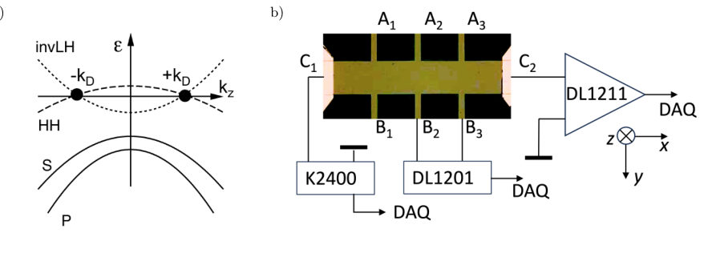
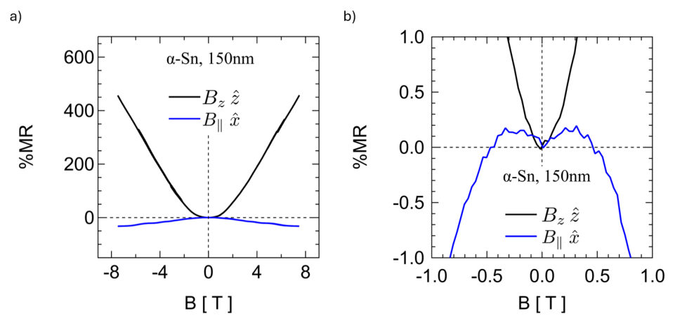
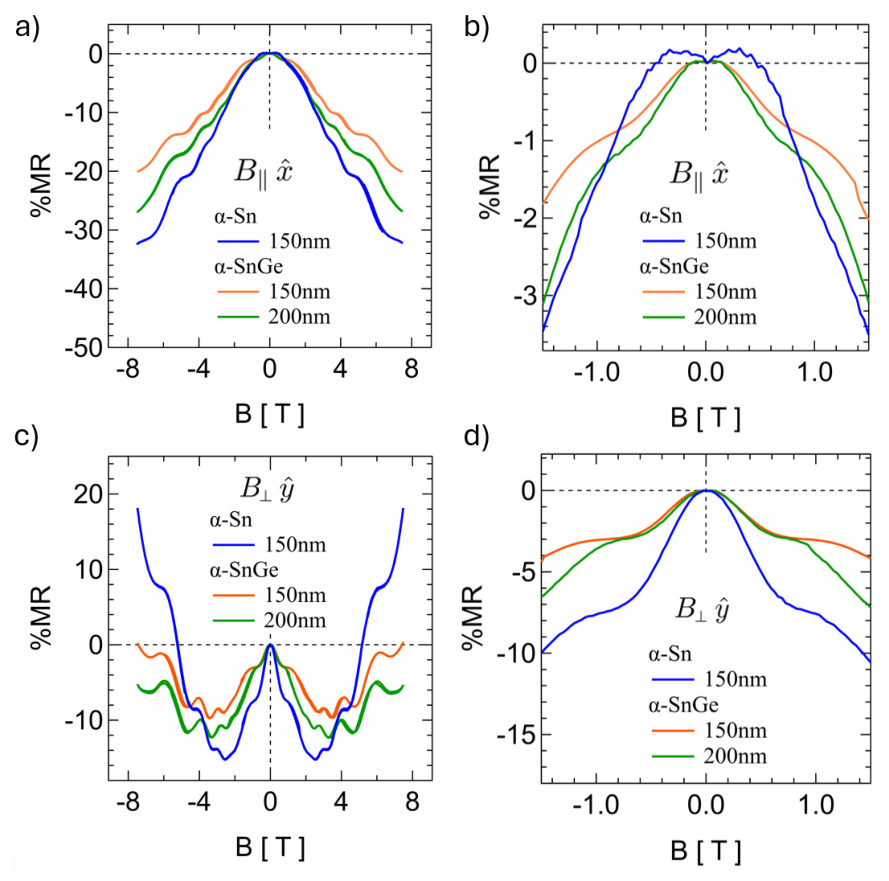
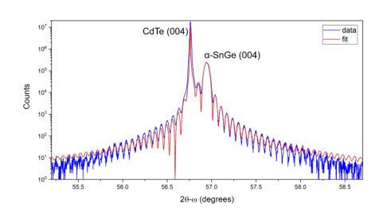
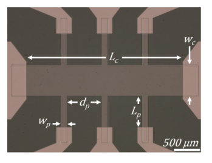
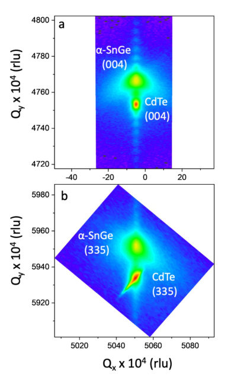
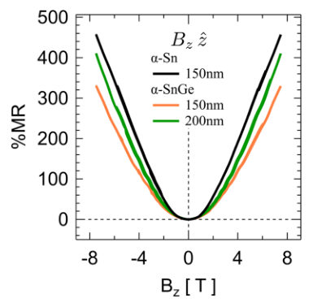
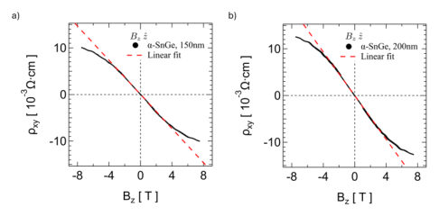
Main problem. The study aims to determine if the chiral anomaly is the physical origin of negative magnetoresistance (MR) in strained alpha-Sn and alpha-SnGe films.
Main result. The authors find that negative MR persists in both the Dirac semimetal and the 3D topological insulator phase, leading them to reject the chiral anomaly as the primary mechanism and suggest a mechanism related to strong spin-orbit interaction.
Method. Magnetotransport measurements were performed on MBE-grown epitaxial films at 5 K using a 9-Tesla solenoid magnet, with structural characterization via X-ray diffraction and RHEED.
Summary. This paper investigates the origin of negative magnetoresistance in strained alpha-Sn and alpha-SnGe films. By comparing the transport properties of the Dirac semimetal phase and the 3D topological insulator phase, the researchers demonstrate that the negative MR occurs even when the chiral anomaly is absent. This suggests that the effect is likely driven by strong spin-orbit coupling rather than the chiral anomaly. The study also highlights how material quality and phase impurities like beta-Sn can complicate the interpretation of topological transport phenomena.
Model / system. The physical system consists of strained, epitaxial thin films of pure alpha-Sn (a Dirac semimetal) and alpha-SnGe alloy (a 3D topological insulator) grown on CdTe substrates.
Key observables. Magnetoresistance (MR), Hall resistivity, carrier density, and transport mobility.
Important parameters / regimes. Temperature of 5 K, magnetic field strength up to 8 T, and in-plane vs. out-of-plane field orientations.
Assumptions / limitations. The films are assumed to be elastically strained with negligible relaxation, and the analysis assumes the absence of significant current shunting from the substrate.
Figures summary. Figure 1 shows the Dirac point schematic and Hall bar geometry; Figure 2 displays MR for out-of-plane and parallel magnetic fields; Figure 3 shows in-plane MR for different orientations; Figure 4 and 5 present XRD scans and reciprocal space maps for strain analysis.
Paper structure. The paper introduces the problem of negative MR, describes the material growth and device fabrication, presents magnetotransport results for different field orientations, discusses the rejection of the chiral anomaly hypothesis, and concludes with an analysis of material quality and potential confounding factors like beta-Sn formation.
To test the hypothesis that the chiral anomaly is responsible for negative magnetoresitance (MR) in \atn{}, we have studied magnetotransport in strained, epitaxial films of pure \aSn{} and the alloy \aSnGe{} that are in the Dirac semimetal and 3D topological insulator state, respectively. We have observed for both states a negative MR with current either parallel or transverse to the in-plane magnetic field, but with a different dependence of MR on $\vec{B}$ strength. Our results are inconsistent with the chiral anomaly and suggest that other mechanisms may be responsible for negative MR in the Dirac/Weyl semimetal phase of \aSn{}. We also discuss several factors in sample design and material quality that may be contributing to the incongruous observations of MR reported in studies of strained \atn{} films.
Authors: V. I. Kuznetsov, O. V. Trofimov
Type: both · Category: other · PDF: https://arxiv.org/pdf/2604.26814v1
Analysis basis: full PDF text, analyzed in chunks
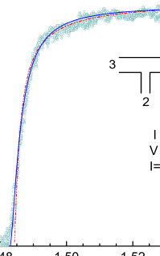
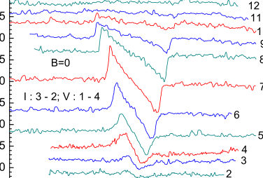
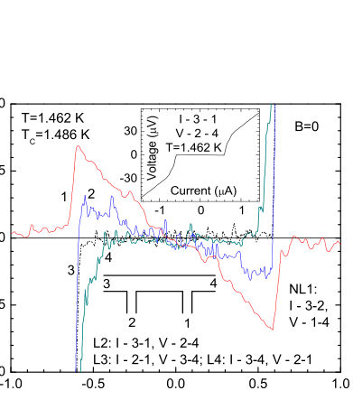
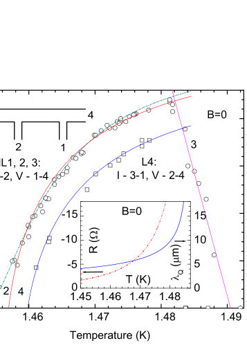
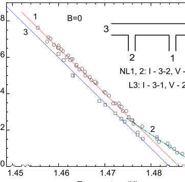
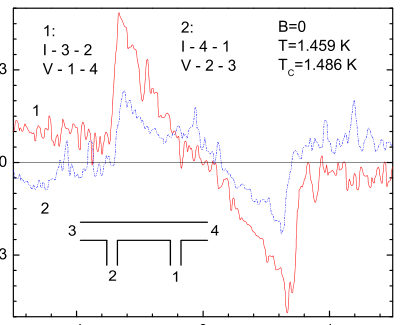
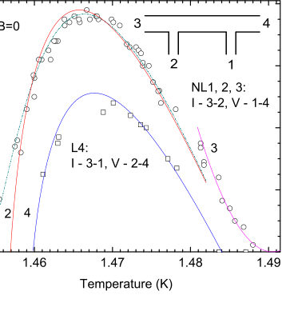
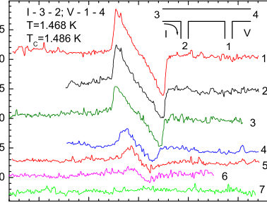
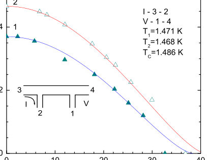
Main problem. The study investigates the origin of anomalous negative nonlocal and local voltages (and resistances) in a quasi-one-dimensional superconducting aluminum structure near the critical temperature.
Main result. The negative voltages are attributed to quasiparticle charge imbalance at the N-S interface, and the experimental temperature dependence is best described by incorporating equilibrium superconducting fluctuations (AL and MT corrections).
Method. Low-frequency DC measurements were performed on aluminum wire networks in zero and varying magnetic fields, with experimental data compared against the nonequilibrium SBT model and equilibrium fluctuation theories.
Summary. This paper explores the phenomenon of negative local and nonlocal resistances in aluminum superconducting wires. The researchers found that when a narrow wire is in a normal state while a wider wire is superconducting, injecting current creates a quasiparticle charge imbalance. This imbalance leads to voltages with a sign opposite to the applied current. The study successfully reconciles experimental observations with theories involving both nonequilibrium charge imbalance and equilibrium superconducting fluctuations.
Model / system. A quasi-one-dimensional aluminum structure consisting of a wide superconducting wire and adjacent narrow wires, operating in a heterogeneous normal-superconducting (N-S) regime where $T_{cn} < T < T_{cw}$.
Key observables. Nonlocal voltage ($V_{NL}$), local voltage ($V_L$), nonlocal resistance ($R_{NL}$), local resistance ($R_L$), and critical currents ($I_c$).
Important parameters / regimes. Critical temperatures ($T_c \approx 1.486$ K), coherence length ($\xi$), quasiparticle diffusion length ($\lambda_Q$), and magnetic field ($B$).
Assumptions / limitations. The structure is treated as quasi-one-dimensional ($d \ll w_n < w_w < 2\xi(T)$) and the aluminum is in the dirty superconductor regime.
Figures summary. Figure 1 shows the resistive transition and structure sketch; Figure 2 displays $V(I)$ curves highlighting negative voltage peaks; Figure 3 shows nonlocal $V(I)$ curves; Figure 4 shows temperature dependence of negative resistances; Figure 5 shows critical current temperature dependence; Figure 9 shows critical current vs. magnetic field; Figure 10 shows negative resistance vs. magnetic field.
Paper structure. The paper introduces the experimental setup and the phenomenon of negative voltage, describes the measurement of resistive transitions and voltage peaks, analyzes the temperature and magnetic field dependence of resistances and critical currents, and concludes by comparing experimental results with nonequilibrium and equilibrium fluctuation models.
To study a nonlocal electron transport in an aluminum superconducting quasi-one-dimensional structure, we measured negative nonlocal (local) direct current voltages in the structure in a magnetic field near the critical temperature. The structure is a normal-superconducting at $T_{cn}
Authors: Micha C. J. Philipp, Lukas Köbbing, Alexander Karger, Andreas Jossen, Arnulf Latz, Birger Horstmann
Type: both · Category: other · PDF: https://arxiv.org/pdf/2604.26545v1
Analysis basis: full PDF text, analyzed in chunks
Main problem. The study aims to understand and model the complex degradation mechanisms, specifically particle cracking and SEI growth, in lithium-ion batteries with silicon-graphite composite anodes during both cyclic and calendar aging.
Main result. The physics-based model accurately predicts capacity loss and silicon health across various temperatures and protocols, identifying that instantaneous SEI growth following crack formation is a dominant degradation driver during check-up cycles.
Method. The researchers used a combination of long-term experimental battery testing (up to 96 weeks) and a physics-based Single-Particle-Model with electrolyte effects (SPMe) implemented via the PyBaMM framework.
Summary. This paper presents a physics-based modeling approach to predict the degradation of next-generation lithium-ion batteries using silicon-graphite anodes. By coupling electrochemical and mechanical models, the authors can disentangle how particle cracking and SEI growth contribute to capacity loss. The model successfully captures battery behavior during both active cycling and long-term storage under various temperatures and usage protocols. This work is significant for optimizing the design and usage of high-energy-density batteries.
Model / system. The system is a lithium-ion battery with a silicon-graphite (Si-Gr) composite anode and an NCA cathode. The model uses coupled partial differential equations to describe SEI growth, mechanical particle cracking, and loss of active material.
Key observables. Capacity loss (CL), State of Health of Silicon (SoH_Si), Loss of Lithium Inventory (LLI), and Loss of Active Material (LAM).
Important parameters / regimes. Temperature (20C, 35C, 50C), State of Charge (SoC), Depth of Discharge (DoD), C-rate, and check-up (CU) frequency.
Assumptions / limitations. The model focuses on moderate temperatures (primarily 20C) and assumes thermal dependencies are outside the current scope; it also uses a dimensionality reduction to SPMe for computational efficiency.
Figures summary. Figure 1 shows a schematic of silicon degradation mechanisms; Figure 2 compares simulated vs. measured capacity loss and SoH_Si; Figure 3 breaks down individual degradation contributions; Figures 5-7 show degradation trends across different SoC, DoD, and temperature regimes; Figure 9 shows storage degradation relative to CU frequency.
Paper structure. The paper introduces the problem of Si-anode degradation, describes the physics-based model and its implementation, presents validation against cycling and storage experimental data, and concludes with a discussion on model limitations and future directions.
Higher energy density and longer lifetime are the requirements for next-generation lithium-ion batteries. A promising anode material is silicon, which offers high specific capacity, but its significant volume change during lithiation and delithiation enormously reduces battery lifetime. A physical understanding of the processes degrading the battery is key to mitigate this effect and advance in the field. We develop a physics-based model to describe degradation during battery cycling under various protocols and storage conditions, with varying check-up (CU) frequencies. The model can disentangle basic degradation mechanisms, such as the growth of the Solid-Electrolyte Interphase (SEI), from silicon mechanisms, such as particle cracking, SEI growth on cracks, and loss of active material (LAM). We investigate the impact of CUs on the observed storage degradation and the reason behind the increased degradation in batteries, including silicon in the anode. Additionally, we relate the observed degradation to operating conditions, enabling future optimization of battery use and design.
Authors: Tushar K. Ghosh, Elvar Ö. Jónsson, Stephan Steinhauer, Panagiotis Grammatikopoulos, Hannes Jónsson
Type: theory · Category: strongly correlated electrons · PDF: https://arxiv.org/pdf/2604.26372v1
Analysis basis: full PDF text, analyzed in chunks
Main problem. Understanding the atomistic mechanism by which NO2 adsorption quenches polaron-mediated conductivity in hematite (alpha-Fe2O3) gas sensors.
Main result. NO2 adsorption induces a 0.72 e- electron transfer from the oxide to the molecule, which eliminates the localized Fe2+ polaron state and increases electrical resistance.
Method. Density Functional Theory (DFT) using the PBE+U approach combined with Nudged Elastic Band (NEB) calculations and Bader charge analysis.
Summary. This study provides a microscopic explanation for how the oxidizing gas NO2 affects the conductivity of hematite-based sensors. Using DFT+U calculations, the authors show that polarons preferentially accumulate at the surface and that NO2 adsorption pulls electrons away from the oxide. This electron transfer destroys the localized Fe2+ states, effectively quenching the charge carriers and increasing the material's resistance. These findings offer design principles for improving the sensitivity of iron oxide gas sensors.
Model / system. The system consists of the Fe-terminated alpha-Fe2O3 (0001) surface and bulk, focusing on small-polaron hopping between Fe sites.
Key observables. Activation energy for polaron hopping, charge transfer amount, magnetic moments, and lattice parameters.
Important parameters / regimes. Hubbard U = 4.3 eV, activation energy of 0.12 eV, and electron transfer of 0.72 e-.
Assumptions / limitations. Use of the PBE+U functional to correct self-interaction errors and the assumption that small-polaron hopping is the dominant transport mechanism.
Figures summary. Figure 1a shows the atomic structure; Figure 2 displays the atomic structure and electron density difference of the polaron; Figure 3 illustrates the minimum energy path for polaron migration.
Paper structure. The paper introduces the gas-sensing problem, validates the DFT+U approach against experimental lattice parameters and activation energies, details the polaron migration energy at the surface, analyzes the charge transfer during NO2 adsorption, and concludes with implications for sensor design.
Polaron-mediated charge transport in α-Fe2O3 plays a central role in its performance as a gas-sensing material, yet the atomistic interaction between surface adsorbates and polarons remains insufficiently understood. Here, density functional theory with Hubbard-U correction (DFT+U) combined with nudged elastic band calculations is used to investigate polaron formation, migration, and quenching at the Fe-terminated α-Fe2O3 (0001) surface. The calculated activation energy for small-polaron hopping in bulk α-Fe2O3 is found to be 0.12 eV, in excellent agreement with experimental measurements, confirming the validity of the computational approach. Slab calculations show that migration of the polaron from bulk to the surface lowers the energy by 0.12 eV, indicating preferential localization of charge carriers at the gas-solid interface. Adsorption of NO2 induces substantial electron transfer (0.72 e-) from the oxide to the molecule, eliminating the localized Fe2+ polaron state and thereby suppressing polaronic conductivity. These results provide a direct microscopic explanation for the resistance increase of hematite-based sensors upon exposure to oxidizing gases. More broadly, the study establishes how surface adsorption can modulate charge transport α-Fe2O3 through control of polaron populations, offering design principles for improved iron oxide gas sensors.
Authors: Berengere Evin, Dorian Gaboriau, Mathieu Segard, Sylvain Challet, Arnaud Fabre, Stephanie Thiebaut
Type: both · Category: other · PDF: https://arxiv.org/pdf/2604.26697v1
Analysis basis: full PDF text, analyzed in chunks

Main problem. Explaining the sudden transition from long-term helium-3 retention to massive desorption in metal tritides during tritium aging.
Main result. A new dislocation-based mechanical model successfully predicts the helium desorption threshold and bubble growth evolution, matching experimental data more accurately than previous semi-empirical models.
Method. The study combines continuum mechanics for bubble growth with a dislocation-based mechanical model, comparing the results against experimental TEM, STEM, EELS, and NMR data.
Summary. This paper addresses the mechanism behind the sudden release of helium-3 from metal tritides like palladium tritide. The authors propose that as helium bubbles grow, they act as precipitates that impede dislocation motion, eventually reaching a hardness threshold that triggers massive gas release. By integrating dislocation physics into a continuum mechanics model, they accurately predict the timing and scale of this desorption. This mechanistic approach replaces older empirical models with a more predictive framework based on fundamental material properties.
Model / system. The system is palladium tritide (PdTx) where helium-3 produced by tritium decay is trapped in nanobubbles that act as solid-state precipitates.
Key observables. Bubble radius, bubble pressure, helium-to-palladium ratio (He/Pd), and dislocation mobility/strains.
Important parameters / regimes. Shear modulus (47 GPa), Burgers vector (0.27 nm), yield strength (170 MPa), and critical precipitate radius (~1.4 nm).
Assumptions / limitations. The desorption threshold is reached when dislocation mobility is blocked due to reaching maximum material hardness (equality of Orowan and Friedel strains).
Figures summary. Figure 1 shows TEM images of palladium powder; Figure 2 shows bubble radius evolution; Figure 3 shows bubble pressure evolution; Figure 4 shows the He/Pd ratio vs. theoretical ratio.
Paper structure. The paper introduces the problem of helium release, presents a new dislocation-based modeling approach, compares this model to previous semi-empirical methods, validates the model against experimental measurements, and discusses limitations regarding pressure estimation.
This letter is presenting a simple but effective mechanism that explains why ,during tritium aging, metal tritides retain most helium-3 for years and then suddenly release massive amount. The mechanism is based on the hypothesis that dislocations blocking could explain the sudden change of behavior. The modeling of this phenomenon combine a mechanical and microstructural approach. The calculations made with this mechanism fit all the aging data acquired on aged palladium tritide
Authors: C. Lim, F. Ballester, A. Kar, M. Alkorta, D. Subires, J. Dai, M. Tallarida, E. Vescovo, T. K. Kim, C. Cacho, C. Yi, S. Roychowdhury, A. Kumar Sharma, Y. Choi, G. Fabbris, J. Strempfer, P. Gargiani, C. Shekhar, C. Felser, I. Errea, M. G. Vergniory, S. Blanco-Canosa
Type: both · Category: strongly correlated electrons · PDF: https://arxiv.org/pdf/2604.26636v1
Analysis basis: full PDF text, analyzed in chunks
Main problem. The study aims to understand the origin of complex magnetism, spin-flip transitions, and the anomalous Hall effect in the distorted kagome RTi3Bi4 (R = Nd, Sm, Gd) family, specifically disentangling the magnetic contributions of the rare-earth ions from the Ti kagome sublattice.
Main result. The researchers identified that the Ti kagome layer in GdTi3Bi4 is polarized by the Gd zigzag chains via Gd 5d electrons, and they found that the Sm3+ 4f electrons lift the Dirac cone above the Fermi level, making it a hole-type carrier.
Method. The study combines experimental techniques including ARPES, XAS, and XMCD with theoretical methods such as Density Functional Theory (DFT) and atomic multiplet theory simulations.
Summary. This paper investigates the electronic and magnetic properties of a specific family of distorted kagome metals. By using a combination of ARPES and X-ray spectroscopy, the authors show how the rare-earth zigzag chains interact with the Ti kagome layers to induce magnetism in the Ti sites. They also identify how the rare-earth 4f electrons influence the topology of the band structure, such as the position of Dirac cones. This work provides crucial insights into the mechanisms driving the anomalous Hall effect in these materials.
Model / system. The physical system is the 134-kagome family of materials (R = Nd, Sm, Gd) characterized by an orthorhombic distorted kagome lattice of Ti atoms, Bi hexagonal/triangular lattices, and interleaved zigzag chains of rare-earth atoms.
Key observables. Electronic band structure, Fermi surfaces, Dirac points, van Hove singularities, spin and orbital magnetic moments, and oxidation states.
Important parameters / regimes. Temperatures as low as 2 K, magnetic fields up to 6 T, and the R3+ oxidation state.
Assumptions / limitations. DFT simulations neglected spin-orbit coupling in some instances, and XAS/XMCD simulations used reduced Slater integrals and spin-orbit coupling (80% of atomic values).
Figures summary. Figure 1 shows the unit cell and Brillouin zones; Figure 2 displays valence band dispersions and DFT-calculated band structures; Figure 3 presents XAS spectra and magnetic hysteresis curves.
Paper structure. The paper introduces the kagome material family, presents experimental electronic structure mapping via ARPES, details the magnetic characterization via XAS and XMCD, compares results with DFT and multiplet theory simulations, and concludes with the implications for understanding the anomalous Hall effect.
Kagome materials are known for hosting emergent quantum phenomena driven by the interaction between different lattice, charge and spin orders. Here, we present a detailed angle resolved photoemission (ARPES), density functional theory (DFT) and x-ray magnetic circular dichroism (XMCD) study of the electronic and magnetic structure of $R$Ti$_3$Bi$_4$ ($R$ = Nd, Sm, Gd). ARPES and DFT demonstrate that the bulk electronic band structure is dominated by the hybridization of the Ti bands, and the weak electron-like pocket at $Γ$ is identified as a surface state. The isotropic XAS profile of the $M_{4,5}$-edge of the rare earth is consistent with the presence of $R^{3+}$ oxidation state. Using the XMCD sum rules, backed by the atomic multiplet theory calculations, we obtain the spin and orbital magnetic moments. The Ti $L_{2,3}$-edge XMCD reveals the presence of a small magnetic moment in GdTi$_3$Bi$_4$, presumably driven by the proximity of the {Ti} kagome layers to the $zigzag$ chains of Gd, while the total magnetic moment of Gd is shared by the $f$ and $d$ electrons. Our combined XMCD, ARPES and DFT study brings an important piece of information to understand the spin flip transitions and anomalous Hall effect observed in the $R$Ti$_3$Bi$_4$ kagome metals.
Authors: Wenwu Jiang, Huasong Qin, Yilun Liu, Wengen Ouyang, Oded Hod, Michael Urbakh
Type: theory · Category: other · PDF: https://arxiv.org/pdf/2604.26300v1
Analysis basis: full PDF text, analyzed in chunks
Main problem. Investigating how mechanical perturbations, specifically in-plane strain and interfacial twist, affect the vertical thermal conductance of both homogeneous (graphene/graphene, h-BN/h-BN) and heterogeneous (graphene/h-BN) van der Waals interfaces.
Main result. Homogeneous interfaces show reduced thermal conductance under both strain and twist, whereas heterogeneous graphene/h-BN interfaces are insensitive to twist but show significant conductance changes under strain (increase under compression, decrease under tension).
Method. Atomistic simulations using Non-Equilibrium Molecular Dynamics (NEMD) with the LAMMPS package, supplemented by Fermi's golden rule and density of phonon modes analysis.
Summary. This paper explores how mechanical strain and twisting can be used to engineer heat transport in 2D material interfaces. It reveals a fundamental difference between similar material stacks (graphene/graphene) and different material stacks (graphene/h-BN), where the latter is uniquely sensitive to strain but not twist. The researchers provide a simple model based on local atomic distances and stacking to predict these thermal properties. This work is crucial for designing efficient heat dissipation strategies in future nanoscale electronic and spintronic devices.
Model / system. The study focuses on 16-layer van der Waals stacks of graphene and hexagonal boron nitride (h-BN), utilizing anisotropic interlayer potentials and REBO/Tersoff intralayer potentials.
Key observables. Vertical thermal conductivity (kappa_perp), interfacial thermal conductance (ITC), frequency-resolved thermal conductance G(omega), and local registry index (LRI).
Important parameters / regimes. In-plane biaxial lateral strain (epsilon), interfacial twist angle (theta), and local interlayer distance (d_i).
Assumptions / limitations. The study assumes the validity of the atomistic potentials (REBO and Tersoff) and uses a phenomenological model based on local geometric characteristics to capture the transport behavior.
Figures summary. Figure 1 shows the simulation setup, vertical thermal conductivity as a function of strain, and normalized ITC comparisons. Figure 2 displays frequency-resolved thermal conductance under various strains. Figure 3 shows the dependence of vertical thermal conductivity on specific parameters.
Paper structure. The paper introduces the problem of thermal management in vdW heterostructures, describes the simulation methodology and physical models, presents results for homogeneous and heterogeneous interfaces, provides a physical mechanism via phonon analysis, and concludes with a validated phenomenological model.
A dramatic difference between the vertical thermal conductance response of homogeneous and heterogeneous graphene/h-BN interfaces to external mechanical perturbations, is predicted. Homogeneous graphene and h-BN interfaces exhibit strong conductance reduction for both in-plane strain and interfacial twist. Conversely, the vertical thermal conductance of the heterogeneous graphene/h-BN junction is insensitive to twist deformations but shows significant increase or decrease under compressive or tensile strains, respectively. Our atomistic simulations predictions are rationalized by Fermi's golden rule and density of phonon modes analyses, indicating that vertical phonons and local stacking configurations have a central role in the interlayer heat transport behavior. A simple phenomenological model, based on local interlayer distance and stacking, captures well the dependence of vertical heat conductance on strain and twist deformations.
Authors: Longjun Xiang, Hao Jin, Jian Wang
Type: theory · Category: strongly correlated electrons · PDF: https://arxiv.org/pdf/2604.26665v1
Analysis basis: full PDF text, analyzed in chunks
Main problem. Determining whether an intrinsic counterpart to the third-order extrinsic anomalous Hall effect exists to serve as a diagnostic transport fingerprint for altermagnets.
Main result. The study demonstrates that the third-order intrinsic anomalous Hall effect (IAHE) is generically allowed in altermagnetic spin Laue groups and identifies the Berry curvature quadrupole as its microscopic quantum geometric origin.
Method. The authors use spin-group symmetry analysis, semiclassical theory, and quantum-geometric decomposition of the conductivity tensor into Berry curvature and quantum metric contributions.
Summary. This paper identifies the third-order intrinsic anomalous Hall effect as a unique transport fingerprint for altermagnets, distinguishing them from ferromagnets and antiferromagnets. By using symmetry analysis and quantum geometry, the authors show that this effect arises from the Berry curvature quadrupole. They demonstrate a resonant enhancement of the effect near altermagnetic band crossings and suggest it is experimentally detectable in materials like V2Se2O. This work establishes a new hierarchy of Hall effects across different classes of collinear quantum magnets.
Model / system. The study focuses on altermagnets, specifically utilizing a 2D Lieb-lattice model and the experimentally realized van der Waals altermagnet V2Se2O.
Key observables. Third-order intrinsic anomalous Hall conductivity, Hall voltage, Berry curvature quadrupole (BCQ), and acceleration quantum metric dipole (AQMD).
Important parameters / regimes. Spin-orbit coupling (SOC) strength, chemical potential near band crossings, and the moderately dirty regime (scattering time ~ 10^-14 s).
Assumptions / limitations. The analysis focuses on the intrinsic nature of the effect and assumes a moderately dirty metallic regime; it does not discuss the T-even third-order extrinsic effect.
Figures summary. Figure 1 shows the hierarchy of IAHE across FM, AFM, and AM; Figure 2 displays the Lieb-lattice structure and band dispersions; Figure 4 shows band dispersions with spin-flip SOC and the quantum-geometric decomposition of conductivity.
Paper structure. The paper begins by establishing the hierarchy of IAHE, moves to symmetry analysis of the third-order IAHE tensor, provides a quantum-geometric decomposition of the effect, analyzes specific models (Lieb-lattice and V2Se2O), and concludes with experimental feasibility estimates.
The intrinsic anomalous Hall effect (IAHE) provides a powerful transport fingerprint of quantum magnets, with its linear and second-order responses distinguishing ferromagnets and $\mathcal{P}\mathcal{T}$-symmetric antiferromagnets, respectively. Altermagnets, as an emergent class of quantum magnets, have recently been shown to host a third-order extrinsic anomalous Hall effect, raising a question of whether an \textit{intrinsic} counterpart can serve as a diagnostic of altermagnetic order. Based on spin-group symmetry analysis, we demonstrate that the third-order IAHE is generically allowed in the ten spin Laue groups relevant to altermagnets when spin-orbit coupling (SOC) is taken into account. By combining these symmetry constraints with the anomalous velocity induced by the second-order Berry curvature, we uncover a resonant third-order IAHE arising near the altermagnetic band crossings at generic momenta in both the Lieb-lattice altermagnet and the experimentally realized altermagnet V$_2$Se$_2$O. Notably, we identify the Berry curvature quadrupole, encoded in the second-order Berry curvature and activated by finite SOC, as the microscopic quantum geometric origin of this resonance. Our results establish the third-order IAHE as an intrinsic quantum geometric transport fingerprint of altermagnets and extend the hierarchy of IAHE across collinear quantum magnets.
Authors: Aida Amini, Shruti Verma, Katharina Kohlmann, Sebastian Obernberger, Jean-Christof Lamanque, Andreas Rüdiger, Kenneth R. Beyerlein
Type: both · Category: other · PDF: https://arxiv.org/pdf/2604.26718v1
Analysis basis: full PDF text, analyzed in chunks
Main problem. Understanding the crystallization dynamics and phase evolution of Hf0.5Zr0.5O2 (HZO) thin films during pulsed laser annealing to maximize the ferroelectric orthorhombic phase.
Main result. The study identified an optimal 8-nm HZO thickness and a single-shot laser energy density of 177 mJ/cm2 that produces an 86% ferroelectric orthorhombic phase fraction, following a kinetic crystallization pathway.
Method. In situ transmission electron microscopy (TEM) combined with nanosecond pulsed visible laser irradiation and finite element simulations to model heat transfer.
Summary. This paper investigates how visible pulsed laser annealing can be used to control the phase formation in HZO thin films. By using in situ TEM, the researchers tracked the crystallization process in real-time. They found that an 8-nm thick film reaches a high ferroelectric phase fraction when pulsed with a specific energy density. The study also reveals that the melting of the substrate helps regulate the peak temperature, supporting a specific kinetic pathway for phase transformation. This work provides a roadmap for using laser-driven engineering to create high-performance ferroelectric materials for advanced electronics.
Model / system. A Si3N4/TiN/Hf0.5Zr0.5O2 thin-film heterostructure designed to mimic CMOS device structures, using TiN as a visible-light absorbing heat source.
Key observables. HZO crystallinity, phase fraction (orthorhombic, tetragonal, and monoclinic), and SAED ring patterns.
Important parameters / regimes. Laser energy density (fluence), HZO film thickness (7, 8, and 15 nm), heating rates (up to 3e11 C/s), and peak temperatures (up to 1900 C).
Assumptions / limitations. The heat transfer model assumes a Gaussian spatial and flat-top temporal heat source and incorporates the partial melting of the Si3N4 substrate.
Figures summary. Figure 1 shows SAED images and TEM boundaries of crystalline/non-crystalline regions; Figure 2 plots crystallization threshold fluence vs. thickness; Figure 3 shows SAED radial distribution intensity profiles and phase models; Figure 6 shows SAED radial distribution profiles.
Paper structure. The paper introduces the problem of HZO phase stabilization, describes the in situ TEM/laser experimental setup, presents quantitative phase analysis of SAED patterns, discusses thickness-dependent threshold behavior, provides thermal modeling via finite element simulations, and concludes with implications for scalable electronic applications.
Laser annealing offers a promising route to back end of the line fabrication of ferroelectric thin film transistors based on hafnium-zirconium oxide (HZO). Due to the wide band gap of this material, previous reports have studied the crystallization of HZO using ultraviolet or infrared light. In contrast, we monitor its crystallization in a Si3N4/TiN/Hf0.5Zr0.5O2 thin film heterostructure upon irradiation with visible nanosecond laser pulses. This geometry mimics the structure of CMOS devices and harnesses the absorption of TiN in the visible regime to generate the heat necessary for the transformation. Through a series of local in situ measurements using a modified transmission electron microscope, we quantify the relationship between the HZO film thickness, critical laser energy density and the ferroelectric HZO phase fraction, finding a sharp threshold behavior in the laser pulse energy necessary to crystallize HZO. The optimal condition of irradiating an 8-nm HZO film with a single laser pulse with an energy density of 177 mJ/cm2 is found to produce 86% of the ferroelectric orthorhombic phase. Heat transfer dynamics within the heterostructure during laser annealing are revealed by finite element simulations, where the partial melting of the silicon nitride substrate is found to play an important role limiting the temperature to 1900 °C. This finding as well as the observed laser pulse energy threshold behavior support a kinetic crystallization pathway involving the tetragonal phase. More generally, these findings show how laser-driven phase engineering can lead to scalable design and enhanced performance of ferroelectric materials in advanced electronic applications.
Authors: Chuanqi Zheng, Chushan Li, Ke Huang, Chenyu Zhang, Kenji Watanabe, Takashi Taniguchi, Hao Yang, Dandan Guan, Liang Liu, Shiyong Wang, Yaoyi Li, Hao Zheng, Canhua Liu, Jinfeng Jia, Xueyang Song, Zhiwen Shi, Guorui Chen, Xiao Li, Tingxin Li, Xiaoxue Liu
Type: experiment · Category: strongly correlated electrons · PDF: https://arxiv.org/pdf/2604.26643v1
Analysis basis: abstract only; PDF text extraction failed or PDF unavailable
Main problem. The study aims to investigate the emergence and tunability of high-Chern-number Chern insulating states in hole-doped rhombohedral tetralayer graphene/hBN moiré superlattices.
Main result. The researchers discovered multiple high-Chern-number Chern insulators, including new symmetry-broken states with C = +3, ±2, and ±1 at fractional fillings, and demonstrated that these states are highly tunable via moiré wavelength, electric field, and magnetic field.
Method. The study uses transport property measurements across a range of twist angles and alignment orientations in rhombohedral tetralayer graphene/hBN heterostructures.
Summary. This paper explores the discovery of various high-Chern-number Chern insulators in rhombohedral tetralayer graphene/hBN moiré superlattices. By investigating the hole-doped side, the authors identified new symmetry-broken states with Chern numbers such as +3, ±2, and ±1 at fractional fillings. They demonstrate that these topological phases can be precisely controlled using the moiré wavelength, displacement electric fields, and magnetic fields. This work highlights the high degree of tunability available in these specific moiré systems for engineering topological landscapes.
Model / system. The physical system is a rhombohedral tetralayer graphene (RTG) moiré superlattice formed by alignment with hexagonal boron nitride (hBN), specifically focusing on the hole-doped regime.
Key observables. Chern numbers (C), moiré filling factors (v), and transport properties.
Important parameters / regimes. Moiré wavelength, displacement electric field, external magnetic field, twist angle, and alignment orientation.
Paper structure. The paper presents an investigation of transport properties in RTG/hBN moiré superlattices, detailing the observation of various Chern insulating states at specific filling factors and discussing their dependence on external tuning parameters.
Moiré superlattices based on rhombohedral multilayer graphene have emerged as a highly tunable platform for engineering correlated topological phases. Here, we systematically investigate the transport properties of the hole-doped side in rhombohedral tetralayer graphene/ hexagonal boron nitride (hBN) moiré superlattices across a range of twist angles and alignment orientations. Notably, we observed multiple high-Chern-number Chern insulators, including the previously reported integer Chern insulator with Chern number C = -4 at moiré filling factor v = -1 and newly discovered symmetry-broken Chern insulating states with C = +3, $\pm$2, $\pm$1 at fractional moiré fillings of v = -2.5 or -2.6. These Chern insulating states emerge in both hBN alignment, but exhibit a sensitive moiré wavelength dependence. Our findings demonstrate the exceptional tunability of these high-Chern-number states via moiré wavelength, displacement electric field and external magnetic field, underscoring the distinct topological landscape realized in hole-doped RTG/hBN moiré superlattices.
Authors: Nirnoy Basak, Sumathi Rao, Faruk Abdulla
Type: theory · Category: other · PDF: https://arxiv.org/pdf/2604.26739v1
Analysis basis: full PDF text, analyzed in chunks
Main problem. The study investigates electronic transport across a junction between a Weyl semimetal (WSM) and a layered Chern insulator (LCI) under a perpendicular magnetic field, specifically seeking the origin of universal conductance saturation.
Main result. The researchers find that magnetotunnel conductance increases linearly with the magnetic field at low fields and saturates to a universal value independent of microscopic interface details, driven by topological charge pumping from the Chern layers.
Method. The study employs exact diagonalization of a coupled Hamiltonian to find the interface spectrum and uses KWANT simulations to compute the magnetotunnel conductance.
Summary. This paper explores how transport behaves at the interface of a Weyl semimetal and a layered Chern insulator. It reveals that while conductance initially grows with a magnetic field, it eventually reaches a constant, universal plateau. This plateau is determined by the topological properties of the Chern insulator rather than the specific details of the interface. The findings suggest that this universal behavior is a robust feature of topological charge pumping.
Model / system. A junction between a gapless Weyl semimetal and a gapped layered Chern insulator in a slab geometry, subject to a perpendicular magnetic field. The model uses a two-band lattice Hamiltonian for the WSM and a stack of 2D Chern insulators for the LCI.
Key observables. Magnetotunnel conductance (G), interface-localized band dispersion, and the critical magnetic field (Bc).
Important parameters / regimes. Magnetic field (B), interface coupling strength (kappa), Weyl node separation (k0), velocity anisotropy (vr), and system dimensions (Lx, Ly).
Assumptions / limitations. The system assumes a specific slab geometry and a 90-degree rotation of the LCI lattice to ensure orthogonal crossing of surface states at zero coupling.
Figures summary. Figure 1 shows a schematic of the WSM/LCI junction and a summary of conductance results; Figure 3 displays magnetotunnel conductance under different velocity anisotropies; Figure 4 demonstrates the robustness of the conductance plateau.
Paper structure. The paper introduces the WSM-LCI junction problem, describes the Hamiltonian and physical model, presents the numerical transport results and the discovery of universal conductance, compares the results to WSM-WSM junctions, and discusses the robustness against disorder.
We investigate electronic transport across a junction between a Weyl semimetal (WSM) and a layered Chern insulator (LCI) in the presence of a magnetic field perpendicular to the interface. The topological mismatch between the gapless Weyl semimetal and the momentum-resolved chiral edge modes of the layered Chern insulator leads to interface Fermi-arc states with a qualitatively distinct connectivity: unlike WSM-WSM junctions, the interface Fermi arcs are forced to reconnect through the Brillouin-zone boundary rather than terminating at the projections of the Weyl nodes. We analyze the spectrum and compute the magneto tunnel conductance mediated by the interface-localized states. We find that the conductance increases linearly with magnetic field at low fields and saturates beyond a critical field to a constant value that is independent of microscopic details such as interface coupling, arc geometry, and lattice-scale parameters. This universal saturation reflects a transport mechanism governed by the topological charge pumping associated with the Chern layers, rather than magnetic breakdown between Fermi arcs. We further show that, under specific conditions, a junction between two distinct Weyl semimetals can exhibit a similar saturation behavior, thereby clarifying the topological origin of the observed universality.
Authors: Vitalii Shtender, Chin Shen Ong, Pedro Berastegui, Olivier Donzel-Gargand, Johan Cedervall, Charles Hervoches, Premek Beran, Olle Eriksson, Ulf Jansson
Type: both · Category: other · PDF: https://arxiv.org/pdf/2604.26560v1
Analysis basis: full PDF text, analyzed in chunks
Main problem. The study aims to correct the established crystal structure of the high-temperature ceramic Al5C3N, specifically resolving whether it possesses a non-centrosymmetric (P63mc) or centrosymmetric (P63/mmc) space group.
Main result. The authors demonstrate that Al5C3N crystallizes in the centrosymmetric P63/mmc space group with a disordered C/N distribution, supported by X-ray/neutron diffraction, DFT energy stability, and STEM imaging.
Method. The research employs a combination of high-temperature synthesis, single-crystal X-ray diffraction, neutron powder diffraction, STEM (HAADF/ABF), and Density Functional Theory (DFT) calculations.
Summary. This paper provides a definitive correction to the crystal structure of the Al5C3N ceramic. By combining experimental diffraction data with computational DFT, the authors prove that the material is centrosymmetric (P63/mmc) rather than non-centrosymmetric. They identify a disordered distribution of carbon and nitrogen atoms as the stable configuration. This structural clarification is crucial for predicting the material's electronic and physical properties.
Model / system. The physical system is the ternary Al-C-N ceramic compound Al5C3N, characterized by a nanolaminate-like stacking sequence of Al2C, Al(C/N), and Al2(C/N)2 layers.
Key observables. Space group symmetry, atomic occupancies of C and N, lattice constants (a and c), band gaps (direct and indirect), and vibrational modes (Raman/IR).
Important parameters / regimes. Temperature (up to 2000 C), N2 partial pressure, formation energy difference (0.2 eV/f.u.), and neutron scattering lengths for C and N.
Assumptions / limitations. The study assumes that the observed centrosymmetry might arise from a disordered supercell or lattice modulation rather than simple structural twinning.
Figures summary. Figures include comparisons of crystal structures, XRD/neutron diffraction patterns, STEM intensity profiles, EDS chemical mapping, and electronic band structures/DOS.
Paper structure. The paper begins with the motivation regarding structural disorder, describes the synthesis and characterization techniques, presents the rejection of the P63mc model via diffraction and DFT, proposes the new P63/mmc disordered model, and concludes with electronic property implications.
The high-temperature ceramic compound Al5C3N with promising application usage belongs to the scarcely studied Al-C-N system. It was originally reported as an ordered compound in the non-centrosymmetric space group P63mc and described as a nanolaminate with an -Al2C-AlN-Al2C2- stacking sequence. The recently reported structural disorder in the related compound Al4SiC4 led us to question this proposed structure for Al5C3N and investigate the possibility of a disordered structure in the centrosymmetric space group P63/mmc. In the present work, we employed different synthesis routes to maximize the yield and quality of the desired phase, and applied a variety of techniques to probe the Al5C3N crystal structure. Our single-crystal X-ray diffraction analysis clearly indicates that the non-centrosymmetric space group P63mc must be rejected. From a joint refinement of single-crystal X-ray and powder neutron diffraction data, the occupancies of C and N were refined at two sites in P63/mmc resulting in the stacking sequence -Al2C-Al(C/N)-Al2(C/N)2-. Furthermore, DFT calculations show that a centrosymmetric disordered structure described in a supercell has the lowest energy, 0.2 eV per formula unit, relative to the previously reported P63mc structure. The calculated band structure shows both direct and indirect band gaps which lead to implications for the physical properties. Finally, STEM analysis provides additional evidence that the crystal structure of Al5C3N is better described in the centrosymmetric space group P63/mmc.
Authors: Sebastian Bürger, Harshit Joshi, S Ganga Prasath, Rahul Chajwa, Rama Govindarajan
Type: both · Category: other · PDF: https://arxiv.org/pdf/2604.26189v1
Analysis basis: full PDF text, analyzed in chunks
Main problem. Understanding the relationship between settling velocity and porosity for complex, porous, non-spherical objects and determining if a universal scaling law exists.
Main result. The study finds a power-law relationship between settling speed and solid fraction, with an exponent of 0.43 in bounded containers and 0.30 in an unbounded domain after correcting for wall effects.
Method. The researchers used 3D-printed Bravais lattice unit-cells in a viscous fluid, combined with high-speed imaging, Particle Image Velocimetry (PIV), Stokesian Dynamics (SD) simulations, and Boundary Integral Methods (BIM).
Summary. This paper investigates how the shape and porosity of complex, lattice-like structures affect their settling speed in a viscous fluid. By studying various Bravais lattice unit-cells, the authors discovered a power-law scaling between settling velocity and solid volume fraction. They specifically highlight how container walls significantly bias experimental measurements and demonstrate that applying Faxén corrections reveals a more universal scaling exponent. This work provides insights into the sedimentation of complex aggregates, which is crucial for understanding transport in oceans and the atmosphere.
Model / system. The physical system consists of various 3D-printed Bravais lattice unit-cells (such as SC, BCC, and FCC) made of spheres connected by slender rods, settling in a highly viscous silicone oil within a glass container.
Key observables. Terminal settling velocity (U), solid volume fraction (phi_s), and fluid velocity fields.
Important parameters / regimes. Low Reynolds number (Re approx 10^-4), lattice spacing (d), sphere radius (a), and the ratio of particle size to container size.
Assumptions / limitations. The system is in the Stokesian regime; the SC lattice analysis assumes a far-field limit (a/d << 1) for certain models; and slender-body theory assumes rods do not interact hydrodynamically with each other.
Figures summary. Figure 1 shows the experimental setup and lattice types; Figure 2 shows PIV setup and streamlines; Figure 3 and 4 show normalized velocity vs. solid fraction in bounded and unbounded domains; Figure 5 illustrates the SD model; Figure 6 shows fluid velocity fields; Figure 7 compares experimental data to various models; Figure 9 shows the influence of rods on settling speed.
Paper structure. The paper introduces the problem of porous object settling, describes the experimental setup and lattice geometries, presents experimental scaling results, details the numerical/theoretical models used to account for wall effects and rod interactions, and concludes with a comparison of the findings to existing theories like the Darcy-Brinkman model.
We study experimentally and theoretically the Stokesian settling of a well-known class of porous shapes: Bravais lattice unit-cells, whose porosity we vary controllably by changing their lattice spacing. In our experiments, conducted in a square cuboidal container with its long-axis aligned along gravity, we find that the settling speed U and the solid fraction φ of these lattice units obey a power-law relationship U $\propto$ φ^γ , with an exponent γ = 0.43 independent of their shape. To understand the observed scaling exponent, we analytically and numerically investigate the settling of the simple cubic structure under different approximations. We find that the walls of the container, though far from the sinking object, have a defining effect. Our Stokesian boundary integral simulations show that the Faxen's boundary correction captures the wall-effects accurately and enables us to discount the wall-effect from the experimental data, yielding a power-law exponent γ = 0.30 for settling in an unbounded domain. The power-law relating sinking speed and porosity is a step towards predictively understanding the sedimentation fluxes of complex objects in the clouds and the oceans. However, the applicability of this universal scaling to irregular and biologically richer aggregates found in nature remains an open direction.